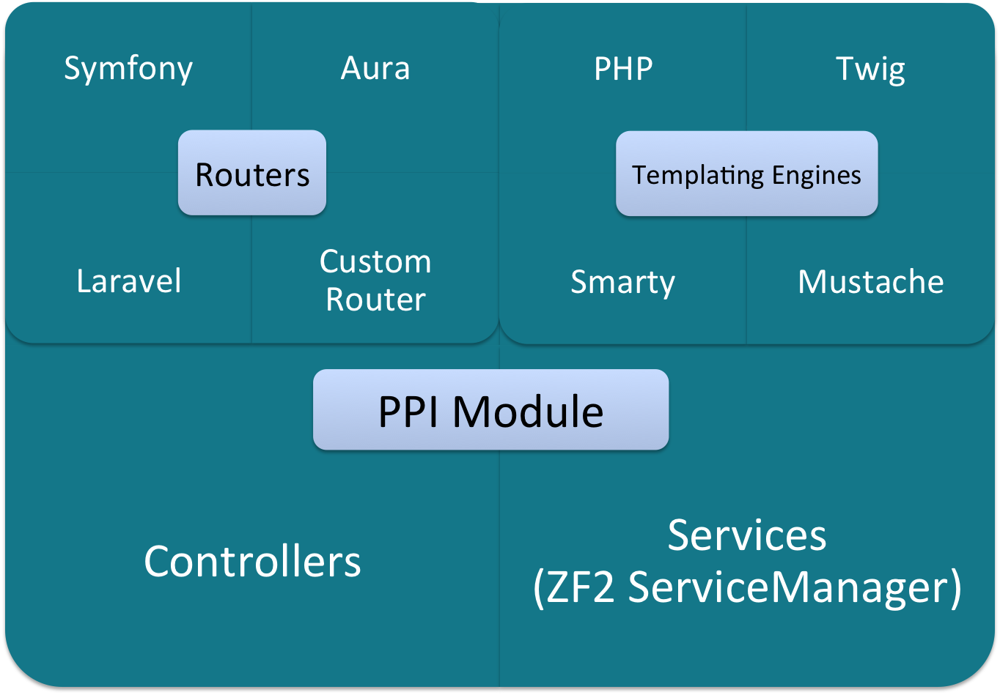

The PHP Interoperability Framework


Agenda
1. Why it exists? What gap does it fill?
2. How we built it - technical overview
3. Practical examples
1. Why it exists?
What gap does it fill?
P.P.I.?
Hmm.. what does it stand for?
- PHP
- Interoperability
OH, great, another framework. Did you just create this yesterday?
Yes... actually... no.
PPI has been around for more than 9 years now!
PPI version 2.0 was released 3 years ago

PPI PHP Meta Framework is the best PPI PHP Meta Framework!
Why does PPI exist?
What problems does it solve?
Currently, existing frameworks impose a 1-to-1 relationship between your framework app and the framework vendor
What issues does this cause?
vendor lock-in
Vendor Lock-In
Example of Vendor Lock-In

Problems with Vendor Lock-In
You are tightly coupled to the framework that your app was build on
You can't move your code between apps on different frameworks
you’re locked into choosing packages made by the same vendor as the framework you’re using. aka “putting all your eggs in the one basket” you can’t take your code with you
you can’t pull in code from other frameworks and have it mostly just “work”
Gets you “off the island”
What PPI is not
PPI is *not* Payment Protection Insurance
PPI is *not* a framework introducing anything new to you.
It’s using existing code from existing frameworks that you already know
Benefits of PPI
Re-usability of knowledge and community effort!
As PHP grows, PPI will grow (Zend3, Aura3, Symfony3)
2. What's inside?
PPI nuts & bolts

Leverage PHP-FIG standards
A friendly environment for swappable 3rd-party components.
Components may be PSR-ready or potential candidates (Router).
Spearhead PHP-FIG concepts and ideas with a real-life POC for these standards.
PSRs - What's in // what's coming?

PSR-6 Caching Interface
In production for over 1 year now, but PSR-6 still not finished.
namespace PPI\CacheModule\Cache\Driver;
use PPI\CacheModule\Cache\CacheItem;
use PPI\CacheModule\Cache\CacheInterface;
class RedisCache implements CacheInterface {
// ...
}
Other implementations: APC, Disk, Memcached, Memory, Xcache.
PSR-7 HTTP Message Interface
PSR-7 HTTP Message Interface
PPI is PSR-7 ready!
You can easily adding more libraries into the mix when they implement PSR-7.
For now: PPI does the Request object mediation. (i.e: AuraRouterWrapper)
PSR-7 HTTP Message Interface
composer.json:"require": {
"psr/http-message": "^0.11"
}
PPI/Framework/Http/Request.phpuse Psr\Http\Message\RequestInterface;
use Symfony\Component\HttpFoundation\Request as SymfonyHttpRequest;
/**
* HTTP messages consist of requests from a client to a server and
* responses from a server to a client. This interface defines the
* methods common to each.
*/
class Request extends SymfonyHttpRequest implements RequestInterface
{
// ...
} PSR-7 HTTP Message Interface
Want to know more? Ask this guy! => 
PPI Module extends ZF2 Module

PPI Module With Routers

PPI Module With Templating Engines

Object Mediation
No abstraction! :-)
No added abstraction on top of existing framework

Module1 Rest API Module
Module2 MVC Full Stack App

Module3 MVC Full Stack App

PPI Router
We made a routing interoperability layer (Routing PSR?)
Mediate routing and request information from PPI to Aura (for example)
If a Routing PSR is created, we get to throw away a lot of code

3. Practical Examples
Using PPI
composer create-project -sdev --no-interaction ppi/skeleton-app /var/www/skeleton
Application structure
public/index.php
// All relative paths start from the main directory, not from /public/
chdir(dirname(__DIR__));
// Setup autoloading and include PPI
require_once 'app/init.php';
// Set the environment
$env = getenv('PPI_ENV') ?: 'dev';
$debug = getenv('PPI_DEBUG') !== '0' && $env !== 'prod';
// Create...
$app = new PPI\Framework\App(array(
'environment' => $env,
'debug' => $debug,
'rootDir' => realpath(__DIR__.'/../app')
));
$app->loadConfig($app->getEnvironment().'/app.php');
$app->run();
Module Structure
├── Application
│ ├── Module.php
│ ├── resources
│ │ ├── config
│ │ │ └── config.yml
│ │ ├── routes
│ │ │ ├── aura.php
│ │ │ └── symfony.yml
│ │ └── views
│ │ └── index
│ │ ├── index.html.mustache
│ │ ├── index.html.php
│ │ ├── index.html.smarty
│ │ └── index.html.twig
│ └── src
│ ├── Classes
│ │ └── CommunityHelper.php
│ ├── Controller
│ │ ├── Index.php
│ │ └── Shared.php
Module Code
class Module extends AbstractModule
{
public function getRoutes()
{
return $this->getSymfonyRoutes();
// or
return $this->getAuraRoutes();
}
public function getAuraRoutes()
{
return $this->loadAuraRoutes(__DIR__ . '/resources/routes/aura.php');
}
public function getSymfonyRoutes()
{
return $this->loadYamlRoutes(__DIR__ . '/resources/routes/symfony.yml');
}
public function getConfig()
{
return $this->loadConfig(__DIR__ . '/resources/config/config.yml');
}
Point of View
Press ESC to enter the slide overview.
Hold down alt and click on any element to zoom in on it using zoom.js. Alt + click anywhere to zoom back out.
Background Transitions
You can override background transitions per-slide.
<section data-background-transition="zoom">Pretty Code
function linkify( selector ) { if( supports3DTransforms ) {
var nodes = document.querySelectorAll( selector );
for( var i = 0, len = nodes.length; i < len; i++ ) { var node = nodes[i];
if( !node.className ) { node.className += ' roll'; } } } } Code syntax highlighting courtesy of highlight.js.
Marvelous List
- No order here
- Or here
- Or here
- Or here
Fantastic Ordered List
- One is smaller than...
- Two is smaller than...
- Three!
Clever Quotes
These guys come in two forms, inline:
“The nice thing about standards is that there are so many to choose from”
and block:
“For years there has been a theory that millions of monkeys typing at random on millions of typewriters would reproduce the entire works of Shakespeare. The Internet has proven this theory to be untrue.”